| |
Manual |
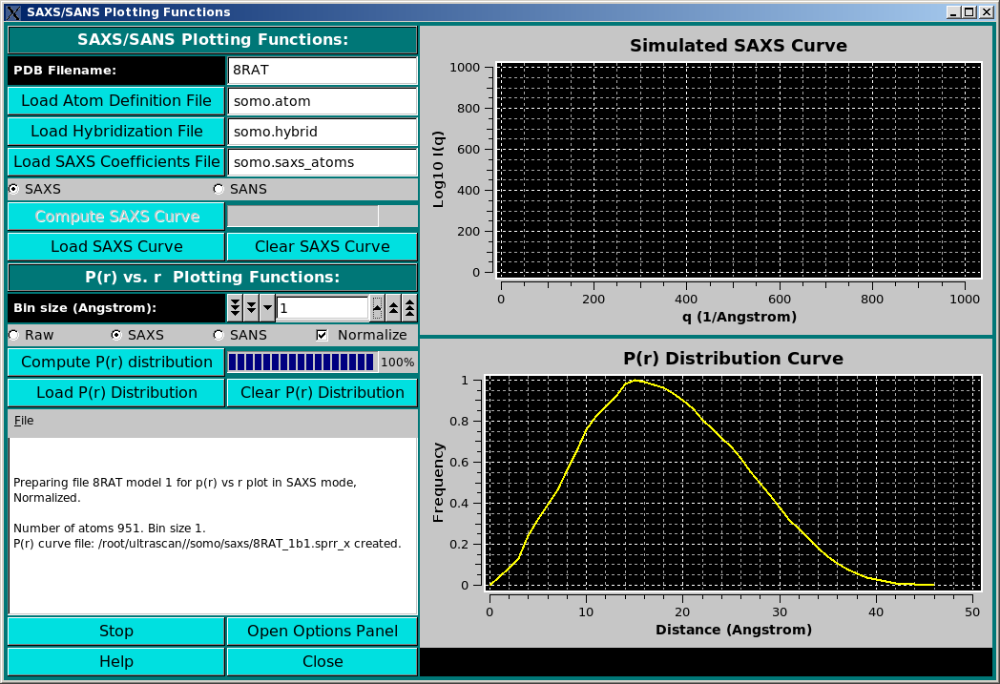
Small-Angle X-ray or Neutron Scattering (SAXS or SANS) I(q) vs. q curves, and pairwise distance distribution curves P(r) vs. r, can be generated by this module from either a PDB file or a bead model. The module is still under development, but several features are already (March 2012) available.
The module window is accessed from the US-SOMO main window by pressing the SAXS/SANS Functions button. If either a PDB or a bead model file are loaded in the US-SOMO main window, it will be automatically exported to the SAXS/SANS module, and listed in the PDB Filename (alternatively, Bead Model Filename) field. If no files were selected in the main US-SOMO window, this field will be empty.
In order to properly compute the I(q) vs. q and P(r) vs. r curves, the module utilizes the atom definition (default: somo.atom), hybridization (default: somo.hybrid) and SAXS coefficients (default: somo.saxs_atoms) tables. Different tables can be selected by pressing the Load Atom Definition File, Load Hybridization File, and Load SAXS Coefficients File buttons. See the main help for further explanations on the content and use of these tables.
The SAXS/SANS module panel is divided in two sections, SAXS/SANS I(q) Plotting Functions: and P(r) vs. r Plotting Functions:, which can operate indipendently, each one with its graphicss window.
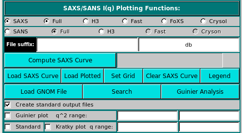
SAXS/SANS Plotting Functions: The first box in this section provides the user with a choice between several methods for the computation of the I(q) vs. q curves for either SAXS or SANS (via mutually exclusive checkboxes).
For SAXS, the choice is between:

with

where c(i), ak(i) and bk(i) are the X-ray scattering atomic coefficients of non-hydrogen atom i, taken from the SAXS coefficients table, count(i)hydrogen is the number of hydrogens attached to atom i, deduced from the atom definition table, c(hydrogen), ak(hydrogen) and bk(hydrogen) are the X-ray scattering atomic coefficients of hydrogen atoms, v(i)excluded is the excluded volume of the atomic group i (non-hydrogen atom + attached hydrogen(s)), taken from the atom definition table, ρ is the solvent electron density, as entered in the SAXS/SANS Options panel, qj is the scattering vector at which the computation is performed, and ri,k is the distance between the centers of atoms i and k.

When a method is selected, the right field of the File suffix: two fields will show an automatic extension: db for Full Debye, h3a for H3 hybrid Debye, fd for Fast, fx for FoXS, and cr_h##_g##_hs#_## for Crysol. For the latter, h## indicates the number of harmonics, g## the order of the Fibonacci grid, and hs#_## the contrast of the hydration shell. An user defined file suffix can also be added in the left field, and the content of these two fields will be appended to the PDB (or bead model) root filename. The I(q) vs. q curves generated with the Full, H3 and Fast methods will have the extension ".ssaxs" (or ".ssans"). Curves generated with FoXS will have a ".dat" extension, and those generated with Crysol/Cryson will have the ".int" extension.
Before starting an I(q) vs. q computation, an experimental curve might be loaded by pressing the Load SAXS Curve button (the label will switch to Load SANS Curve if a SANS method is selected). This will open up a panel listing previously utilized directories where the appropriate file might be found:


Once a file has been selected (see above for a list of compatible file types), the curve will be displayed in the top-right interactive graphics window:

Pressing the Legend button will toggle on/off the displayed curve(s) filename(s). Portions of the graphs can be zoomed in by selecting them with the mouse while pressing the central button:

The top horizontal and right vertical scroll bars allow the visualization of other portions of the graph at the actual zoom level. Right-clicking with the mouse on the graph will restore the full scaling of the graph. Right-clicking on the graph frame will instead open an interactive panel for setting overall graph properties (not shown). Other plotting properties, such as the q units (Å or nm), can be set in the SAS Miscellaneous Options submenu.

Pressing Cancel will set the q range to the one defined in the SAXS/SANS Options submenu. Pressing OK, another small window will pop-up asking to decide to either keep the whole range of q values, or to decimate it by dividing the number of q points by an integer:

This allows avoiding long computations when the target curve contains a large number of q values. If a number greater than 1 is entered, on pressing OK the same window will report an updated number of grid points, and the operation can be repeated until a satisfactory number of points is attained (be aware that the current version of Crysol provided with US-SOMO will not use more than 200 q points anyway):
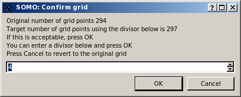
If the integer has not been changed, on pressing OK the computation of I(q) vs. q is finally launched, and its progress is monitored by the Progress bar right next to the Compute SAXS button, and in the progress window at the bottom of the panel.
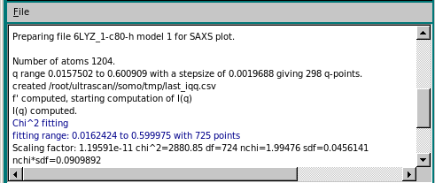
At the end of the computation, a small window pops-up asking if the computed curve is to be rescaled on other previously loaded curves. The curve used to set the grid is proposed as the target curve:

On pressing OK, a check is performed for the existence of a file with the same filename. If one is found, another windows pops-up:
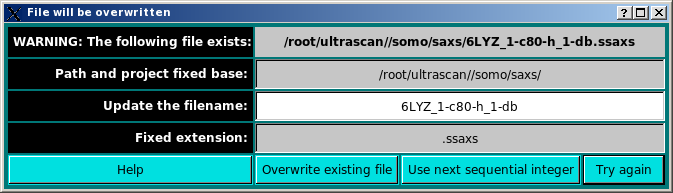
The existing file can be replaced by pressing the Overwrite existing file button, or the automatically appended number at the end of the original filename (e.g. "1" before "-db" in the above example) can be augmented by one pressing the Use next sequential integer button. Alternatively, the filename can be modified by writing in the Update the filename field and then pressing the Try again button (if the new filename exists, the pop-up window will reappear updated).
Once filenames issues have been cleared, the graphics window and the progress window are updated:


The progress window reports several parameters of the scaling/matching operation, like fitting range, scaling factor, χ2, degrees of freedom (df), normalized χ (nchi= √ χ2 / (df - 1) ), the average fractional standard deviation of the target curve (sdf; this is obtained by first dividing the experimental SD at each q point by the experimental I(q) signal at that point, and then making the average), and the product nchi*sdf. The scaling operation is performed weighting each point in the target curve by its associated error. Since data derived from modern SAS detectors can have very small associated errors, the resulting nchi can assume relatively large values even for quite good fits. The product nchi*sdf should give a better estimate of the goodness of the fit. This can be seen by comparing the different ways the residuals of the scaling operation can be represented in a pop-up window that appears at the end of the process (see below). The progress window also reports the total and unhydrated excluded volumes, and the average electron density of the model, plus that of the hydration shell if explicit water molecules are present. Note that all fitting is done on the grid of the target curve. Any computed curves computed with fewer points than the fitting target curve are interpolated using cubic splines to the experimental curve before fitting.
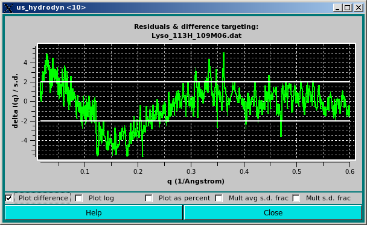
In the graph above, the difference between the calculated and the experimental I(q) points divided by the associated experimental SD are plotted as a funtion of q. The two horizontal white lines indicate the +/- 2 SD which is customarily used as limits for a good fit.
Alternatively, the data can be viewed as a % delta [100 * (I(q)calc - I(q)expt) / I(q)expt] by clicking on the Plot as percent checkbox:
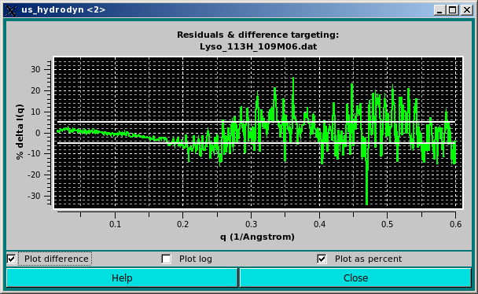
Here we have added two horizontal lines indicating 5% limits of the residuals. We think that this way of plotting the residuals better takes into account the wide variation in both intensity and associated SD values along the q range usually accessed in SAXS experiments.
The same residuals can by also plotted using a log scale by clicking on the Plot log checkbox:
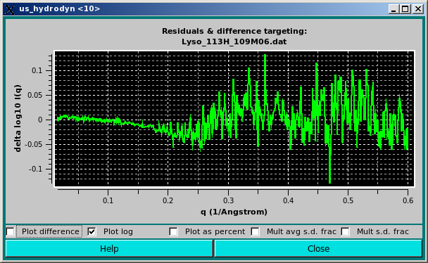
Previously computed csv-style I(q) vs. q files, such as those generated using the US-SOMO Batch Mode, can also be uploaded in the graphics window. In this case, a new window will open listing all the individual curves present in the csv file, plus all other files already uploaded into the graphics window, as described in this help file. After the appropriate selection, pressing "OK" will update the graphics window, and at the same time also the progress window in the bottom-left corner of the panel:


Getting back to the SAXS/SANS I(q) Plotting Functions: panel, pressing the Load Plotted button will re-open the Load CSV style SAXS results window, listing all data currently shown on the graphics window, on which further operations can be performed.
More operations with multiple I(q) vs. q datasets, such as NNLS fitting or best dataset fitting to a target curve can be performed within the Load CSV style SAXS results module.
Pressing the Set Grid button will open up a small window allowing to select, if multiple curves are present, which one is to be used to set the grid for computing an I(q) vs. q curve:

Pressing the Clear SAXS (SANS) Curve button will sequentially remove all loaded curve(s) from the graphicss window.
The Load GNOM button allow loading the content of a GNOM-generated file (see http://www.embl-hamburg.de/biosaxs/manual_gnom.html). This will load graphs in both the I(q) vs. q and P(r) vs. r windows.
Since the P(r) vs. r can be optionally normalized by the ratio between the area under the P(r) curve and the molecular weight of the structure (or bead model), a value for the molecular weight must be entered when loading standard GNOM files. A pop-up window will ask to do so:

The user will be then asked if she/he wants to save the entered molecular weight value in the GNOM file:

If the user accepts to save the molecular weight in the GNOM file, another pop-up window will appear asking to either overwrite the loaded GNOM file, or to change its filename:

By saving the molecular weight value in the GNOM file, US-SOMO will recognized it the next time the file is opened, without any further need t re-enter it.

whose range can be changed by entering starting and ending q2 values in the two fields next to the Guinier plot checkbox.
A Guinier analysis can be performed on a loaded curve by pressing the Guinier Analysis button. If not specified in the above two fields, the optimal range will be automatically searched by the program, and the results (Rg, I(0), q*Rg(min), q*Rg(max), number of points used, and χ2), will be displayed in the progress window:
 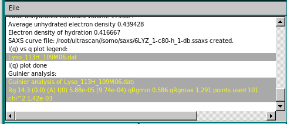
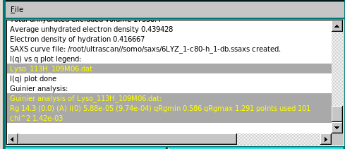
Settings controlling the Guinier analysis can be changed in the SAXS/SANS Options panel.
Besides zooming with the mouse, the q range of the graph can be changed by selecting the Standard checkbox and entering min and max values in the two fields at the right (one of the two fields can be left blank).
Finally, by selecting the Kratky plot checkbox, the data are plotted as q2*I(q) vs. q:
Computed I(q) vs. q curves can be matched against experimental data also in the Kratky plot format (see also the options page)-
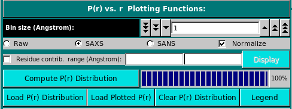
The P(r) vs. r function can be computed in either "Raw", "SAXS", or "SANS" modes, as selected using the checboxes provided. The equation used is:
P(r) = Σi Σj [((bi - b0i) * (bj - b0j) / < (b - b0) >2 * δ(r - rij)]
with, for SAXS, b0i = 10 * (ri / rwat)3
where the bi and bj are:
1- set to "1" for the "Raw" computations;
2- are the number of electrons of the i and j atomic groups for the SAXS computations;
3- are the neutron scattering lengths of the i and j atomic groups at the set D2O fraction Y for the SANS computations.
For SAXS, 10 is the number of electrons in a water molecule, ri is the radius of the ith atom (from the somo.atom table) and rwat is the radius of a bulk water molecule (as set in the SAXS options). The full implementation for SANS in solution is still pending (March 2012). The Kronecker's delta δ(r - rij) is applied to the distances rij between the atom's i and j centers for every bin r. The resolution is controlled by the Bin size (Angstroms): field (default: 1 A). For calculations carried on the original PDB structure, the number of electrons are tabulated in the hybridization table). For bead models, only the Raw option is currently (March 2012) active. In a future release, when generating a bead model the number of electrons of the atoms "assigned" to the bead will be summed up and written in the bead model file (9th column), and could then be used in the P(r) vs. r computations. Similarly, for the SANS computations directly on a PDB structure, the neutron scattering lengths are computed at the set D2O fraction Y (b(Y)i and b(Y)j, computed as explained here), and the only the Raw option is currently (March 2012) active for bead models. In a future release, when generating a bead model the b(0) values and the number of exchangeable H of the atoms "assigned" to each bead will be summed up and written in the bead model file as the 10th and 11th columns, respectively. The computation of the b(Y)i and b(Y)j at the set D2O fraction Y could then be carried out for the evaluation of the SANS P(r) vs. r distribution for a bead model.
By pressing the Compute P(r) distribution button a 3-columns file is created, containing the r, the non-normalized P(r), and the normalized P(r) values, respectively. Normalization is done by first calculating the area under the P(r) curve and then dividing it by the molecular weight of the structure (or bead model). Each P(r) value is then divided by this ratio. The Normalize clickbox will affect which kind is then shown in the graphics window on the right side, which will automatically rescale upon adding a new graph. The files will be saved in the /somo/SAXS/ directory and will have the extension sprr_r for the "Raw" setting, .sprr_x for the SAXS setting, and .sprr_n for the SANS setting. In addition, a suffix containing the bin size used (e.g., b1 for bin size = 1) will be added at the end of the PDB or bead model filename. For the SANS-type files, a suffix recalling the the D2O fraction will be also added (e.g., D05 for D2O fraction = 0.5). If a file with the same filename already exist, a prompt will appear asking if it should be overwritten or not. In the latter case, the P(r) vs. r distribution will be computed and shown in the graphics window, but not saved to a new file.

Before starting a new P(r) vs. r computation, the residues contributing to particular bin can be identified by selecting the Residue contr. range (Angstrom): checkbox and entering a range (min-max) in the two fields at its right. In this case, when the P(r) vs. r computation is completed, the Display button becomes available, and pressing it will call RasMol where the structure will be visualized with the residues contributing to the selected range color-coded from yellow (max contribution) to blue (min contribution). The other residues will be colored gray.
The graphics window will show every new P(r) vs. r curve in a different color, without erasing curves already present. The correspondence between the colors and the files is reported in the progress window, and can be also toggled on and off below the graphics window by pressing the Legend button. A previously-generated, or experimentally-derived P(r) vs. r curve can be uploaded in the graphics window by pressing the Load P(r) Distribution button, and the graphics window can be cleared by pressing the Clear P(r) Distribution button. Progress in the operations is reported in the advancement bar on the side of the Compute P(r) distribution button, and in the progress window below the buttons. Stop will halt the current operation, and the option panel containing the settings controlling the operations, such as the D2O fraction (see here), can be directly accessed by pressing the Open Options Panel button.
This document is part of the UltraScan Software Documentation
distribution.
Copyright © notice.
The latest version of this document can always be found at:
http://www.ultrascan.uthscsa.edu
Last modified on April 26, 2012
{kind=link}
{kind=link}
{kind=link}